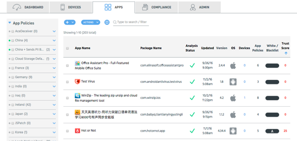

Use the Apps tab to manage and gain insight into your apps. You can group your organization's app environment around critical security risks and compliance concerns. As apps come into Appthority Portal and match risk criteria set in your app policies, they are dynamically added to the list of apps.
See Common Features for additional options available in Appthority.
Apply Policies or Manually Whitelist/Blacklist Apps
Use Appthority policies to filter apps by specific compliance criteria and apply the policies. Apps are marked as noncompliant based on the policy.
You can also manually add apps to the whitelist or blacklist. For example, you may want to blacklist an app that doesn't violate any policies but that you don't want users to install on their devices. Or you might whitelist a specific app that is flagged as noncompliant if the security team wants to approve it without restrictions, or for an internal app to be rolled out.
AirWatch Note: In AirWatch, in the section for app groups, you can filter by whitelist and blacklist app groups. Apps that are blacklisted in Appthority because they are noncompliant based on Appthority app policies will appear in AirWatch as an app group, named the same as the app policy name. Apps manually blacklisted in Appthority appear in a global blacklist app group in AirWatch.
